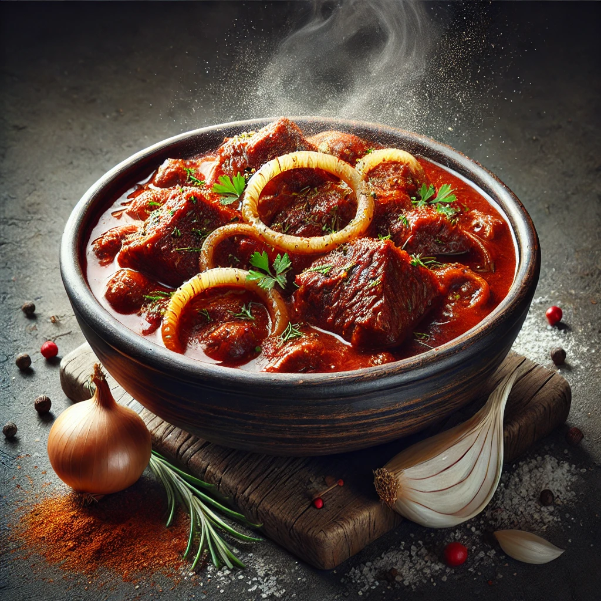

Goulash

Description
Goulash is a very popular meal in my country - the Czech Republic. It has
its origins in Hungary, where it is called pörkölt. While the Hungarian
version is typically more of a stew with chunks of meat and vegetables,
the Czech version is a thicker, heartier dish, often served with bread
dumplings or fresh bread. The key ingredients include beef, onions,
paprika, garlic, and various spices, which are slowly simmered to create a
rich, flavorful sauce. Czech goulash is often enjoyed at family
gatherings, pubs, and even special occasions, representing comfort food
that warms both the body and soul.
Ingredients (for 4-6 persons)
- 1 kg of onions
- 1 kg of pork Sank
- 70 g of tomato paste
- 1.25 l of beef broth
- 5 pieces of big garlic cloves
- pork lard
-
ground paprika (I recommend smoked paprika.), ground caraway, salt and
ground pepper.
Steps
- Chop the onion into small pieces.
- Cut the pork shank into medium-sized cubes.
- Allow the pork lard to melt in the pot.
- Sauté the onion in the lard until it is translucent.
-
Now add the pork shank and allow the meat to brown, but not too much.
(Stir thoroughly throughout the process to ensure the meat is coated
with the onion.)
-
When the meat is browned, sprinkle the entire mixture generously with
paprika. Continue to stir to prevent the paprika from burning.
-
When everything is well mixed, add the tomato paste and continue
stirring.
- Pour the broth over the mixture so that everything is submerged.
-
Cook for as long as possible, stirring occasionally and seasoning to
taste. The goulash is ready when the meat begins to shred into fibers.
- Serve with bread dumplings and garnish the goulash on the plate with chopped onions.